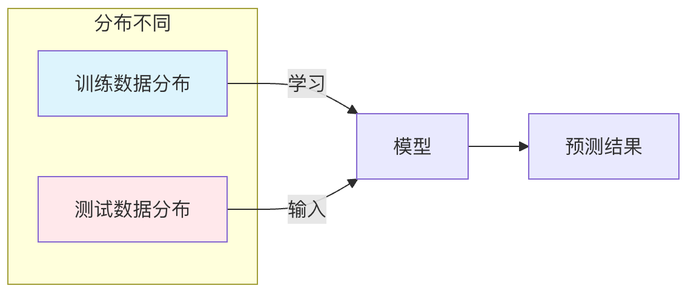

仮定の制約
機械学習は人工知能の中核となる推進力として、画像認識、自然言語処理、レコメンドシステムなどの分野で目覚ましい成果を上げてきました。
しかし、あらゆる強力なツールと同様に、機械学習は万能ではありません。その有効性は、多くの場合、一連の基本的な仮定に依存しています。現実世界のデータや問題の状況がこれらの仮定に反する場合、モデルの性能は大幅に低下し、まったく誤った結論に至ることさえあります。
これらの制約と境界を理解すること、特にその背後にある仮定の制約を理解することは、機械学習を正しく安全に適用するために極めて重要です。これにより、落とし穴を回避できるだけでなく、より適切なモデルを選択したりデータを改善したりする指針が得られ、より堅牢で信頼できるインテリジェントシステムを構築できます。
独立同分布の仮定
これは教師あり学習における最も中核的な仮定の一つです。
基本概念
独立同分布の仮定とは、モデルの学習に使用するデータサンプルと、モデルが将来予測するデータサンプルが、同一の確率分布から独立に抽出されるというものです。
- 独立：あるデータサンプルの出現が、別のデータサンプルの出現確率に影響を与えないこと。
- 同分布：すべてのデータ（トレーニングセット、検証セット、テストセット、そして将来の実データ）が、同じ潜在的なデータ生成規則に従うこと。
なぜ重要か
機械学習モデルの本質は、トレーニングデータを分析してこの潜在的なデータ分布規則を学習することです。もしトレーニングデータとテストデータが異なる分布から来ているなら、モデルが学習した規則はテストの場面には適用できず、その予測結果は信頼できません。
仮定に反した場合の結果と例
この仮定が破られると、分布シフトという問題が発生します。主な種類は以下の通りです。
共変量シフト
- 説明：入力特徴量
Xの分布は変化したが、入力Xと出力Yの関係（すなわち条件付き分布P(Y|X)）は変わらない。 - 例：昼間に撮影された鮮明な画像データセットで猫と犬の分類器を学習し、それを夜間に撮影されたぼやけた画像の認識に使用したとします。ここでは、画像の鮮明さと照明（特徴量
X）の分布は大きく変化しましたが、「猫」と「犬」自体の視覚的特徴（関係P(Y|X)）は変わりません。モデルは夜間のぼやけた特徴に慣れていないため、性能が低下する可能性があります。

ラベルシフト
- 説明：出力ラベル
Yの分布は変化したが、ラベルが与えられたときの入力特徴量の分布P(X|Y)は変わらない。 - 例：健康な人が99%、患者が1%のデータセットで疾病診断モデルを学習したとします。別の地域では、その疾病の罹患率が10%に上昇するかもしれません。実際に病気の人にとって、その症状（
P(X|Y=患病)）は似ていますが、モデルがこれまでに見た「患者」サンプルが少なすぎるため、新しいデータで罹患確率を著しく過小評価する可能性があります。
概念シフト
- 説明：入力
Xと出力Yの間の写像関係自体が、時間や環境とともに変化すること。 - 例：株価予測モデル。株価に影響を与える市場の規則（
P(Y|X)）は動的に変化するため、過去10年のデータで学習したモデルでは、新しい経済政策の下での将来の株価動向を正確に予測できない可能性があります。
トレーニングデータの代表性の仮定
この仮定は、トレーニングデータセットが、モデルが遭遇し得るデータ空間全体を十分に代表していることを要求します。。
基本概念
モデルは「見た」データからしか学習できません。もしトレーニングデータに重要な状況、カテゴリ、特徴量の範囲が欠けている場合、モデルはそれらの「未見」の状況に直面すると対処できなくなります。
仮定に反した場合の結果と例
これは直接的に汎化能力の低さとバイアスという問題を引き起こします。
データカバレッジの不足
- 例：自動運転車の認識モデルの学習に使うデータセットに、豪雨や大雪などの極端な天候の画像が含まれていない場合、モデルはそのような天候に遭遇したとき、歩行者や車両を認識する能力が著しく低下し、場合によっては機能しなくなります。
サンプル選択バイアス
- 説明：データの収集方法が、特定の集団を体系的に除外していること。
- 例：顔認識システムのトレーニングデータが主に特定の肌の色と年齢層の成人から得られたものである場合、子供、高齢者、または他の肌の色の人々を認識する際の精度は明らかに低くなります。これはモデルが「悪い」からではなく、これらの集団の特徴を学習する機会がなかったからです。
定常性の仮定
この仮定は主に時系列データを対象としており、データの基本的な統計的特性（平均、分散など）が時間とともに変化しないことを要求します。。
基本概念
多くの古典的な時系列モデル（ARIMAなど）や、系列データに適用される機械学習モデルは、データ生成過程が定常であるか、差分などの方法で定常にできることを暗に仮定しています。
なぜ重要か
非定常データのトレンドや季節性がモデルの学習プロセスを支配し、モデルは真の内在的関連ではなく、時間とともに変化する見せかけの規則性を捉えてしまい、将来に対して誤った予測をすることになります。
仮定に反した場合の結果と例
- 例：毎月のアイスクリーム売上を予測するとします。データには明確な上昇トレンド（企業の成長が原因の可能性）と夏のピークがあります。非定常データをそのままモデル化すると、モデルは単純に「来月は今月より高い」と予測し、長期トレンド、季節効果、真のランダムな変動を正確に区別できません。市場が飽和すると（トレンドが変わると）、予測は完全に誤ったものになります。
特徴量とラベルの間に相関関係が存在するという仮定
この仮定は機械学習が機能するための根本的な前提です：私たちが提供する特徴量Xは、予測したいラベルとの間にYモデルが学習可能な何らかの相関関係が存在していなければなりません。
基本概念
機械学習モデルのタスクは、XとYそれらの間のこのような関連パターンを見つけることです。もし両者が本質的に無関係であれば、どのようなモデルでもランダムな推測より良い予測はできません。
仮定に反した場合の結果と例
- 例：コーヒーカップの色で翌日の株式市場の上昇・下落を予測しようとするようなものです。これら2つの変数の間には、意味のある因果関係や安定した統計的関連はほとんど存在しないため、どんな高度なモデルを使っても、その結果は無効です。
実践演習：自分の問題を診断する
機械学習プロジェクトを始める前に、以下のチェックリストを検討して、潜在的な仮定の制約リスクを評価してください：
- データソースの一貫性：私のトレーニングデータ（履歴データ）と将来の適用シナリオのデータは、同じ条件で生成されたものですか？考慮していない環境、時間、集団の違いはありませんか？
- データ完全性のチェック：トレーニングセットには、可能性のある重要なカテゴリと極端なケースがすべて含まれていますか？データ収集プロセスに体系的な欠落はありませんか？
- 関係の妥当性：選択した特徴量は、ビジネスロジックや常識の観点から、本当に予測目標と関連していますか？
- 安定性の評価：データが時系列の場合、その統計的特性（平均など）は時間とともに大きく変動しますか？
まとめ
機械学習の仮定の制約を認識することは、その価値を否定するためではなく、より科学的に、より責任を持ってそれを使用するためです。実際の応用では、絶対的に完全な仮定はほぼ存在しません。私たちの目標は、データ前処理（データ拡張、リサンプリングなど）、アルゴリズムの選択（分布シフトに対してロバストなアルゴリズムなど）、および継続的なモデルの監視と評価を通じて、これらの仮定が破られた場合の影響を可能な限り軽減することです。
優れた機械学習の実践者は、単にハイパーパラメータ調整の達人であるだけでなく、データ、問題、モデルの境界を深く理解するデータ探偵でもあります。これらの制約を理解することは、初心者から熟達者へと至るための避けて通れない道です。
その他の拡張